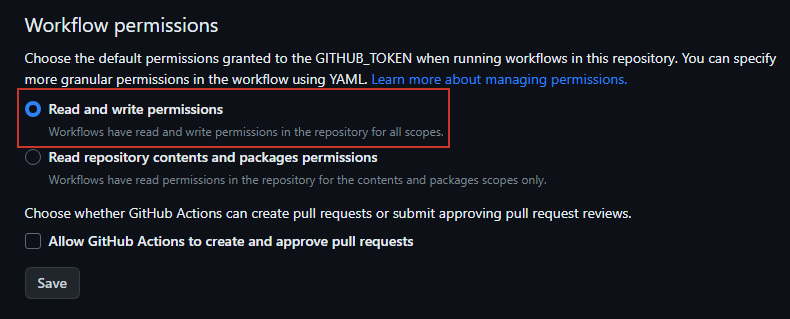
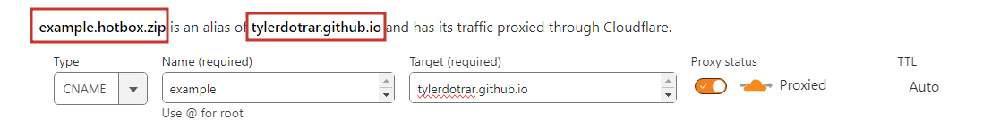
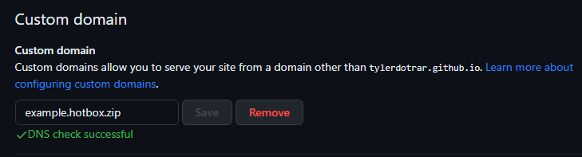

Example mdBook
Primary Directory
Welcome to the Example mdBook!
This site is a test for me to figure out how to get a simple mdBook Github Pages workflow running.

- Note: attachments should be URL encoded.
Creating your Site:
1. Create a repository that is set to Public
2. Create a src directory.
3. Place all Markdown files (aka the site contents) into the src directory.
- The root
.mdfile should beSUMMARY.md. - Formatting documentation can be found here.
- Example
SUMMARY.md:
# Example mdBook
- [Table of Contents](./SUMMARY.md)
- [Primary Directory](Primary%20Directory/README.md)
- [mdBook Github Pages Checklist](Primary%20Directory/mdBook_GithubPages_Checklist.md)
- [Secondary Directory](Secondary%20Directory/README.md)
- [Obsidian Markdown Test](Secondary%20Directory/Obsidian_Markdown_Test.md)
- [Tertiary Directory](Tertiary%20Directory/README.md)
- [Export-Obsidian.ps1](Tertiary%20Directory/Export-Obsidian.md)
4. Include a simple book.toml
- Your custom domain name should be included.
- If no domain name is specified, Github Pages will opt for:
https://<username>.github.io/<repository> - Example
book.toml:
[book]
authors = ["Tyler McCann (@tylerdotrar)"]
language = "en"
multilingual = false
src = "src"
title = "Example mdBook"
[build]
build-dir = "public"
[output.html]
cname="example.hotbox.zip"
5. Enable 'Read & Write Permissions' for Workflows using the GITHUB_TOKEN.
Repository --> Settings --> Actions --> General --> Workflow Permissions

6. Create mdBook Workflow (mdbook.yml)
Repository --> Actions --> Pages --> View All --> mdBook --> Configure- The default deployment yelled at me, so I opted for a simpler, custom
mdbook.yml. - Example
mdbook.yml:
name: Deploy mdBook Github Pages
on:
push:
branches:
- main
pull_request:
jobs:
deploy:
runs-on: ubuntu-20.04
concurrency:
group: ${{ github.workflow }}-${{ github.ref }}
steps:
- uses: actions/checkout@v2
- name: Setup mdBook
uses: peaceiris/actions-mdbook@v1
with:
mdbook-version: '0.4.21'
# mdbook-version: 'latest'
- run: mdbook build
- name: Deploy
uses: peaceiris/actions-gh-pages@v3
if: ${{ github.ref == 'refs/heads/main' }}
with:
github_token: ${{ secrets.GITHUB_TOKEN }}
publish_dir: ./public
7. Set your Github Page deployment to the 'gh-pages' branch.
- The 'gh-pages' branch will be created by the
mdbook.ymlworkflow (assuming no errors occur). - Once it is created, you can set that branch as your deployment branch.

8. Create a CNAME record to point your custom domain to the Github Pages site.
- Documentation on configuring subdomains with Github Pages can be found here.
- This step will vary for everyone, so below is my experience with Cloudflare.

9. Add your target Domain to your Repository settings.
Repository --> Settings --> Pages --> Custom Domain- Once your CNAME finishes propegating, your mdBook should now be accessible.

10. Flex on your peers.
Secondary Directory
What Obsidian Features Work in mdBook?
Tables
| Category 1 | Category 2 | Category 3 |
|---|---|---|
| Example | Example | Longer example here. |
| Example | Example | Longer example here. |
| Example | Example | Longer example here. |
Checklists
- Thingy 1
- Thingy 2
- Thingy 3
Message Blocks (Callouts)
[!info] Information here. Alises: N/A
[!todo] To-do list here. Alises: N/A
[!tip] Important info here! Aliases:
hint,important
[!success] Success here! Aliases:
check,done
[!question] Freqently asked questions! Aliases:
help,faq
[!warning] Warning here! Aliases:
caution,attention
[!failure] Failure here! Aliases:
fail,missing
[!danger] Bruh!!! Aliases: N/A
[!bug] Known bugs here! Aliases: N/A
[!example] Example here! Aliases: N/A
[!quote] Quote here! Aliases: N/A
Example:
[!question]- Guess what?
[!example] Callouts can be renamed...
[!tip] ... and nested!
Mermaid Diagrams
graph TD;
A[Originator] --> B[Route 1];
A --> C[Route 2];
B --> D[Finish];
C --> D;
flowchart LR
A[Hard] -->|Text| B(Round)
B --> C{Decision}
C -->|One| D[Result 1]
C -->|Two| E[Result 2]
gantt
section Section
Completed :done, des1, 2014-01-06,2014-01-08
Active :active, des2, 2014-01-07, 3d
Parallel 1 : des3, after des1, 1d
Parallel 2 : des4, after des1, 1d
Parallel 3 : des5, after des3, 1d
Parallel 4 : des6, after des4, 1d
pie
"Dogs" : 386
"Cats" : 85.9
"Rats" : 15
Tertiary Directory
Export-Obsidian.ps1 (v1.1.2)
- This is an old, unpublished script I made for exporting specific Obsidian notes and correlated attachments.
- I'll likely make a new, refined one for the
Obsidian-to-mdBookworkflow. - This is mostly to see how code block formatting looks on a test site.
function Export-Obsidian {
#.SYNOPSIS
# Export Obsidian Note along with attachments to a specified directory.
# ARBITRARY VERSION NUMBER: 1.1.2
# AUTHOR: Tyler McCann (@tylerdotrar)
#
#.DESCRIPTION
# Exports Obsidian markdown Notes and correlated attachments to a specified
# directory. The exported Note is modified to point all attachments to the
# exported attachments directory, while creating a backup of the unedited
# original.
#
# Parameters:
# -Target --> Obsidian Note to export
# -AttachmentDir --> Directory containing Note's attachments
# -OutputDir --> Export destination
# -UrlEncoded --> Changes Obsidian embeds to URL encoded embeds
# -Help --> Return Get-Help information
#
# Example Usage:
# # Extract Note in a network share and export to current directory
# Export-Obsidian -Target V:/Obsidian/CoolNote.md -AttachmentDir V:/Obsidian/attachments -OutputDir .
#
# # Output Directory
# |
# |__ attachments
# | |__ Pasted image 202307071.png
# | |__ Pasted image 202307072.png
# | |__ Pasted image 202307073.png
# |
# |__ CoolNote.md
# |__ CoolNote.md.bak
#
#.LINK
# https://github.com/tylerdotrar/<tbd>
Param(
[string]$Target,
[string]$AttachmentDir = 'V:\Obsidian\attachments',
[string]$OutputDir = 'V:\Obsidian\OffSec\+Reports\Exports',
[switch]$UrlEncoded,
[switch]$Help
)
# Return Get-Help Information
if ($Help) { return (Get-Help Export-Obsidian) }
# Error Correction
$OutputDir = (Get-Item $OutputDir).FullName
if (!$Target) { return (Write-Host 'No target specified.' -ForegroundColor Red) }
if (!$AttachmentDir) { return (Write-Host 'No attachment directory specified.' -ForegroundColor Red) }
if (!$OutputDir) { return (Write-Host 'No output directory specified.' -ForegroundColor Red) }
$Target = (Get-Item $Target).FullName 2>$NULL
$AttachmentDir = (Get-Item $AttachmentDir).FullName 2>$NULL
$OutputDir = (Get-Item $OutputDir).FullName 2>$NULL
if (!(Test-Path -LiteralPath $Target)) { return (Write-Host 'Target does not exist.' -ForegroundColor Red) }
if (!(Test-Path -LiteralPath $AttachmentDir)) { return (Write-Host 'Attachment directory does not exist.' -ForegroundColor Red) }
if (!(Test-Path -LiteralPath $OutputDir)) { return (Write-Host 'Output directory does not exist.' -ForegroundColor Red) }
# Attempt to make folder to export attachements
Try { mkdir "$OutputDir/attachments" -Force | Out-Null }
Catch { return (Write-Host 'Error when creating exported attachments directory.' -ForegroundColor Red) }
# Confirm Settings
if ($UrlEncoded) { $FormatBool = 'TRUE' }
else { $FormatBool = 'FALSE' }
Write-Host "Exporting and Formatting Obsidian Note:" -ForegroundColor Green
Write-Host "- Target Markdown File: '$Target'"
Write-Host "- Use URL Encoded Embed Paths: '$FormatBool'"
Write-Host "- Export Directory: '$OutputDir'"
# Create a backup of the MD file without changes
$Filename = (Get-Item -LiteralPath $Target).Name
Copy-Item -LiteralPath $Target "$OutputDir/$Filename.bak" -Force
Write-Host "- Target Backup: '$Filename.bak'"
# Modify embed paths and export
$MdContents = Get-Content -LiteralPath $Target
if ($UrlEncoded) { $URLpath = ($OutputDir.Replace(' ','%20')).Replace('\','/') }
# Create Array of all Embedded Images to Export
$EmbeddedImages = $MdContents | Select-String "Pasted image \d+.png" -AllMatches | % { ($_.Matches.Value -Split ' ')[-1] }
# Export Embedded Images
foreach ($Image in $EmbeddedImages) {
Copy-Item -LiteralPath "$AttachmentDir/Pasted image $Image" "$OutputDir/attachments/Pasted image $Image" -Force
Write-host "- Embedded Image Exported: 'Pasted image $Image'"
# Change embed paths to URL encoded absolute path format
if ($UrlEncoded) { $ExportedContents = $MdContents.Replace("![[Pasted image $Image]]","") }
# Change embed paths to point to new attachment folder
else { $ExportedContents = $MdContents.Replace("![[Pasted image $Image","![[./attachments/Pasted image $Image") }
Set-Content -Path "$OutputDir/$Filename" -Value $ExportedContents
$MdContents = $ExportedContents
# Added wait to prevent hanging
Start-Sleep -Milliseconds 200
}
return (Write-Host "Export complete." -ForegroundColor Green)
}